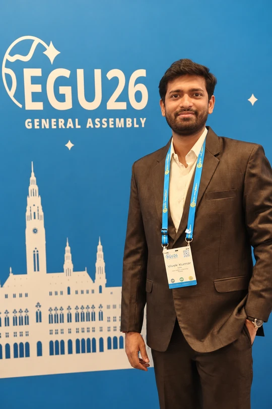

Vivek Kumar Yadav
Joint PhD candidate · Hydrology & Geodesy
Indian Institute of Science, Bengaluru
The University of Melbourne
I study how climate change, human interventions, and natural climate variability shape terrestrial water systems. My work combines remote sensing, hydrological and geophysical modelling, and machine learning.
I am part of the Melbourne–India Postgraduate Academy (MIPA), a jointly awarded doctoral program, and am currently based at the University of Melbourne.

Research
My doctoral research reconstructs long-term changes in terrestrial water storage—the water held at and beneath the land surface—to disentangle the effects of climate and human activity. A longer, consistent record helps us understand changing catchment behaviour and connections between food, energy, and water.
I also investigate causal discovery in hydrometeorological systems and contribute to open-source tools for processing GRACE satellite gravimetry data.
Publications
Google Scholar ↗-
Cause-effect discovery in hydrometeorological systems: evaluation of causal discovery methods
Yadav, V. K., Peel, M. C., Fowler, K., Ryu, D., & Vishwakarma, B. D.
Hydrology and Earth System Sciences, 30, 3455–3496 (2026).
Paper ↗ -
PySHbundle: A Python tool for processing GRACE gravimetry data into global surface mass change datasets
Yadav, V. K., Shakya, A., Mhamane, A., Walling, T., Chander, S., Nikam, B. R., Dasika, N. K., & Vishwakarma, B. D.
Journal of Open Source Software, 11(121), 7550 (2026).
Paper ↗
Talks & Posters
Conference abstracts, posters, presentations, and other public research materials.
Contact
For research enquiries and collaboration, please get in touch.